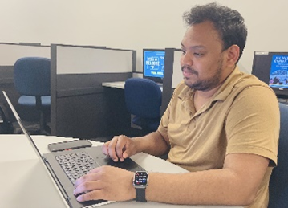
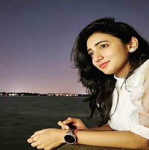

Welcome to Our Project
Utilizing Mixed Reality to Increase Engagement in Children with Autism
Team Information
Team Number: 2
Team Title: Strategic Tech
Team URL: https://akkpuvvada.github.io/CAPProject/
| Name | Details |
|---|---|
|
 Akshaya Kumar Puvvada |
Role: Tech Lead E: puvvadaa0348@uhcl.edu P: (917)-806-7354 |
|
Shiva Krishna Nangunuri |
Role: System Analyst E: nangunuris1516@uhcl.edu P: (713)-320-4721 |
|
 Monika Bondala |
Role: Systems Architect E: bondalam0349@uhcl.edu P: (732)-983-8730 |
Project Information
Mentors: Dr. Dorothea Lerman (lerman@uhcl.edu) and Dr. Ross Niswanger (niswanger@uhcl.edu), University of Houston – Clear Lake.
Introduction
Autism spectrum disorder (ASD) is a neurological and developmental disorder that impairs social communication and social interaction with varying levels of severity. While children with ASD can receive applied behavior analysis (ABA) therapy that can provide potential improvement to ASD deficiencies, ABA care is typically limited by various time constraints, from caregiver availability to cost of services. Mixed reality is a combination of the physical world with augmented reality. Utilizing Apple Vision Pro’s mixed-reality (MR) technology, we will explore the effectiveness of various digital stimuli in garnering engagement by children with various levels of ASD with the physical world and digital objects that can augment treatment for ASD deficiencies.
Project
We will develop MR software to elicit various types of engagement, focused on children with ASD. Specifically, we will focus on receptive communication, expressive communication, gross motor skills, and fine motor skills engagement. Initially, software development will focus on control by a caregiver, such as a therapist or parent, along with measurement of participant data. The software will utilize HoloLens’ visual and auditory capabilities to create various digital avatars and objects to stimulate the focus areas of engagement, combined with ability for control and perception of the displayed MR environment by another person, as well as the automated collection of participant actions and reactions to the stimuli.
Input
Apple Vision Pro has multimodal interaction, including eye-tracking (with gaze and dwell), hand-tracking, and voice input that will be collected for data analysis. Along with the interaction inputs, subjective data will be collected from observers/controllers regarding the various interactions that occur (e.g., levels of difficulty, emotional responses, etc.). All data collected will be secured and protected to ensure participant privacy.
Output
Digital objects and scenarios, anchored and free-floating, will be developed that will interact with participants to invoke verbal communication and manipulation. Scenarios will be viewable by linked HoloLens and traditional monitors.
Agendas
Critical Tasks
- Identifying ways to create a shared space experience.
- Creating viewable experiences from any angle in the shared space.
- Plotting anchor points and angles.
Hardware Requirements
- MacBook or Mac mini
- At least 2 Apple Vision Pros (AVPs)
Tools/Software Toolkits Required
- Unity
- SwiftUI
- Reality Kit
- AR Kit
- Reality Composer Pro (for 3D Content)
Milestone Information
- Project setup and documentation
- AVP sample game
- Synchronization with anchors
- Singleton application to work for multiple AVPs
Abstract
Therapists aim to evaluate how children with autism interact with and respond to dangerous road crossing scenarios within a mixed reality (MR) application designed for shared spaces. The application not only simulates realistic traffic environments but also incorporates features intended to enhance safety awareness, decision-making, and motor skills of autistic children. By analyzing the behaviors and responses of autistic children in these simulated scenarios, therapists seek to identify challenges and opportunities for improvement.
Ultimately, the goal is to refine the MR application to better support and improve the road-crossing skills and safety awareness of children with autism, contributing to their overall developmental progress. The mixed reality application would be developed in Apple Vision Pro (AVP), utilizing the anchor points and world locking services provided by Apple. The application has to be tested thoroughly for synchronization of anchor points and holograms visible through AVP for both the therapist and the child.
Furthermore, the application explores the possibility of collecting interaction data with holograms during dangerous road-crossing scenarios through eye tracking. This data can be analyzed using machine learning models, offering deeper insights into the interaction patterns of autistic children with the MR environment.
Mid-term and Final Presentations
Include links or embedded presentations here.
Final Report
Attach the final report document or summary here.
Project Deliverables
List the project deliverables here.
Final Specifications
Include the final specifications of the project here.
Design Documentation
Include design documentation such as UML diagrams here.
Project Management Information
Provide project management details here.